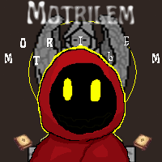
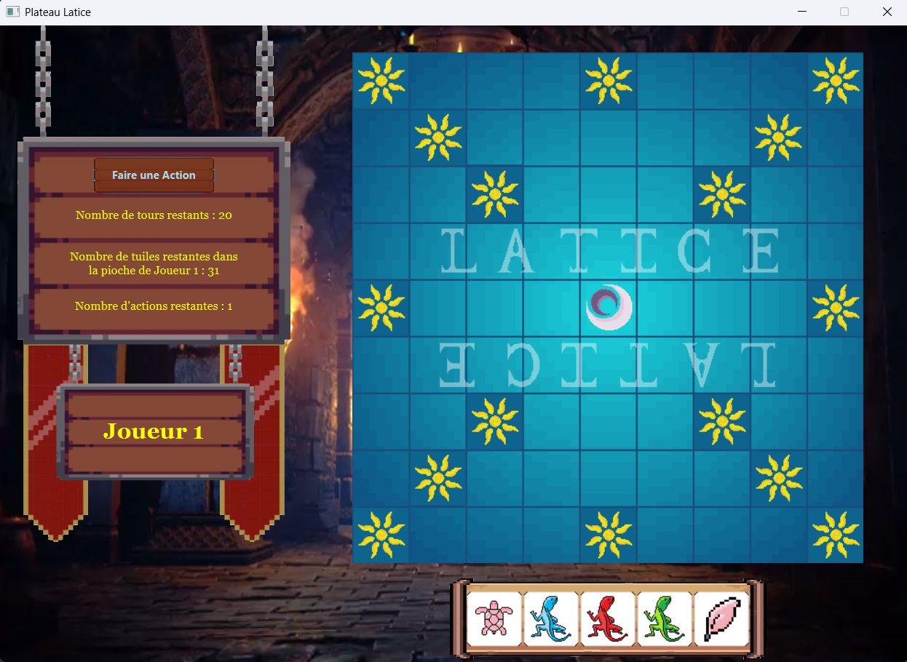
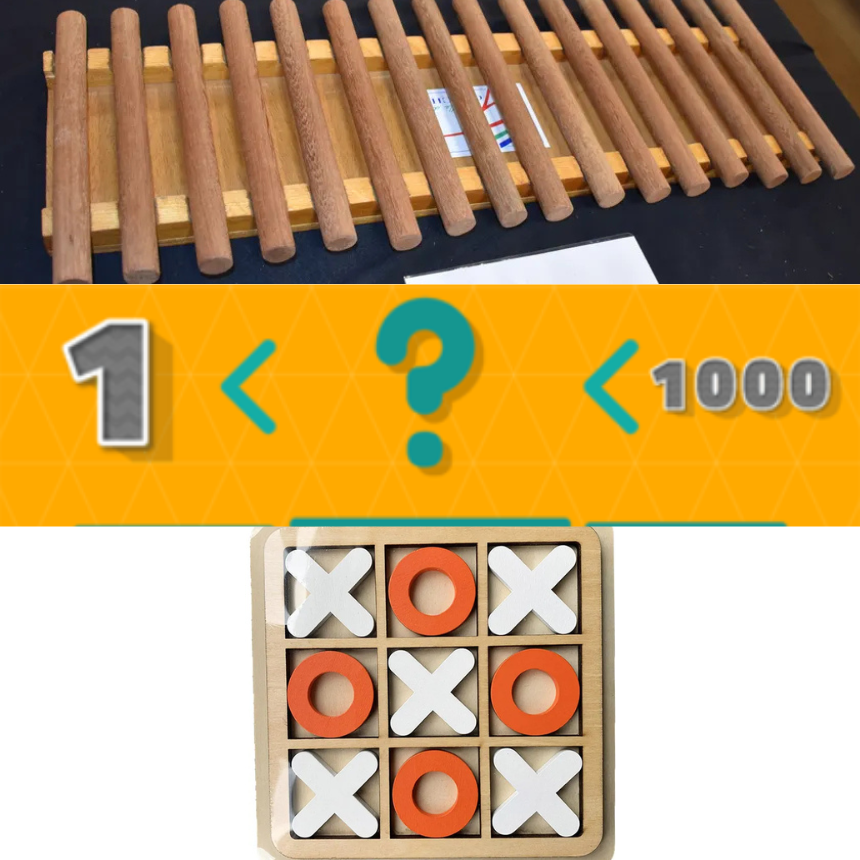

En coursProjet personnel · Solo
Motrilem
Metroidvania 2D sous Unity
Metroidvania 2D : 3 magies, un marécage à explorer, un mini-boss et un boss en plusieurs phases. Démo jouable.
- C#
- Unity
- Python
Étudiant en 2ᵉ année de BUT Informatique à l'IUT du Limousin. Je conçois des applications, des interfaces et des jeux vidéo, et je cherche à progresser à chaque projet.
Une sélection de projets universitaires et personnels, en Java, Python et C#.

En coursProjet personnel · Solo
Metroidvania 2D sous Unity
Metroidvania 2D : 3 magies, un marécage à explorer, un mini-boss et un boss en plusieurs phases. Démo jouable.

TerminéSAE — BUT 1 · 3 personnes
Jeu de plateau en JavaFX
Reproduction du jeu de plateau Latice avec une interface JavaFX complète, des sons et un fond animé.

TerminéSAE — BUT 1 · Binôme
Application Python en terminal
Trois mini-jeux jouables en terminal, avec comptes joueurs, scores sauvegardés et bots.
Les 6 compétences du BUT Informatique et les projets qui les illustrent. Cliquez sur une compétence pour afficher ses Apprentissages Critiques (AC).
Java, Python, C#, JavaFX, Unity, PHP, JavaScript.
Projets associés : Motrilem, Latice, Mini-Jeux
Structures de données, logique algorithmique, IA d'ennemis.
Linux, configuration système, scripts.
Projets associés : TP Linux
SQL, modélisation, requêtes, sérialisation JSON.
Projets associés : Motrilem, SAE SQL
Organisation, planification, suivi des étapes.
Git, communication, coordination en équipe.
Récapitulatif des apprentissages critiques (AC) démontrés dans le portfolio, projet par projet. Chaque page projet contient aussi une partie « Pour les enseignants » avec le détail des preuves.
| AC | Apprentissage critique | Niveau | Motrilem | Latice | Mini-Jeux |
|---|---|---|---|---|---|
| C1 — Réaliser un développement d'application | |||||
| AC11.01 | Implémenter des conceptions simples | BUT 1 | ✓ Déplacements, ennemis, magies. | ✓ Logique du jeu. | ✓ Les trois mini-jeux. |
| AC11.02 | Élaborer des conceptions simples | BUT 1 | ✓ Architecture par systèmes : magie, sauvegarde, audio. | ✓ Organisation du projet. | |
| AC11.03 | Tester et évaluer les résultats | BUT 1 | ✓ Réglage du ressenti, équilibrage des combats. | ✓ Tests des règles et des interactions. | ✓ Tests des jeux. |
| AC11.04 | Développer des interfaces utilisateurs | BUT 1 | ✓ HUD, menus, écran de choix de la magie. | ✓ Interface JavaFX. | |
| AC21.01 | Élaborer des spécifications | BUT 2 | ✓ Spécifications : gestion des joueurs et des scores. | ||
| AC21.03 | Adopter de bonnes pratiques | BUT 2 | ✓ Structure du code, gestion des événements. | ✓ Modularité du code Python. | |
| AC21.04 | Valider par les tests | BUT 2 | ✓ Tests et correction des bugs. | ||
| AC31.02 | Faire évoluer une application | BUT 3 | ✓ Projet développé et enrichi sur plusieurs mois. | ||
| C2 — Optimiser des applications | |||||
| AC12.01 | Analyser un problème | BUT 1 | ✓ Comportements du boss, transitions entre cartes. | ||
| AC22.01 | Choisir des structures de données | BUT 2 | ✓ Données de sauvegarde, profil du joueur. | ||
| C5 — Conduire un projet | |||||
| AC15.02 | Utiliser des outils de gestion | BUT 1 | ✓ 13 étapes de développement sauvegardées et suivies. | ✓ Répartition des tâches et suivi des délais. | |
| C6 — Collaborer au sein d'une équipe | |||||
| AC16.04 | Travailler en équipe | BUT 1 | ✓ Travail à trois sur le même projet. | ✓ Travail en binôme. | |
| AC26.03 | Collaborer efficacement | BUT 2 | ✓ Coordination avec Git. | ||
Survolez une coche pour voir ce que le projet démontre. Les compétences C3 (TP Linux) et C4 (SAE SQL) sont aussi travaillées hors de ces projets.
Étudiant passionné par le développement logiciel, j'aime créer des projets variés : interfaces graphiques, jeux vidéo, scripts Python, applications Java et projets Unity.
Je cherche à comprendre un projet dans sa globalité. J'accorde une grande importance à la cohérence visuelle, à la fluidité d'un parcours et à la qualité technique. J'aime explorer de nouvelles technologies, expérimenter, corriger, améliorer et repousser les limites de ce que je sais faire.
Devenir un développeur polyvalent, capable de créer des projets complets, immersifs et bien construits, tout en continuant à apprendre et à affiner mes compétences.